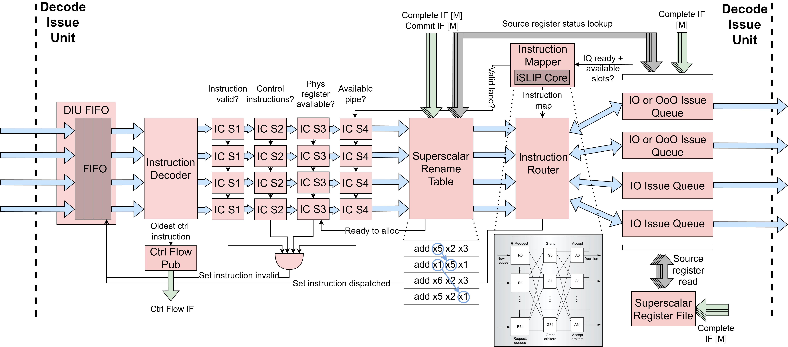

Decode Issue Unit (DIU)
The Decode-Issue Unit (DecodeIssueUnit) decodes p_num_fe_lanes
instructions per cycle in parallel, renames architectural registers to
physical registers, reads source operand values, and issues up to
p_num_pipes instructions per cycle to the execute units via per-pipe
issue queues. Because all instructions in a fetch block travel together, the
DIU also identifies and handles control-flow instructions within the block
before any younger instructions in the same block are allowed to dispatch.
As shown in the diagram below, each frontend lane has its own
InstDecoder and ImmGen instance (wrapped in SSDecoder) that
decode the instruction word and generate the immediate value independently.
The SSRenameTable allocates physical registers for all lanes
simultaneously with inter-lane forwarding of destination register mappings
to handle intra-block dependencies. Instructions are then routed from the
p_num_fe_lanes input lanes to the p_num_pipes output issue queues
via a two-stage crossbar: the SSInstMapper computes the lane-to-pipe
mapping using an iSLIP-based matching engine, and the SSInstRouter
muxes instruction data according to the mapping. Each issue queue is either
the in-order IssueQueueInOrder or the out-of-order IssueQueueOOO,
with its own register file read ports for independent operand resolution.
{kind=link}

Instruction Window FIFO: DIUFifo
The DIU uses a DIUFifo to buffer fetched instruction blocks between the
fetch and decode-issue stages. The FIFO wraps a FifoBypass and presents
an instruction-window abstraction with per-lane editable head state. Each
lane in the head entry carries a 2-bit inst_status field with three
states: INVALID (2'b00), READY (2'b01), and DISPATCHED
(2'b10).
The decode-issue pipeline reads the head entry each cycle and writes back
per-lane status edits: lanes that fail instruction checks for a terminal
reason are marked INVALID, and lanes that successfully dispatch are
marked DISPATCHED. These edits are maintained in shadow registers that
overlay the FIFO head entry and reset when the head is popped or the FIFO
is cleared. The head entry is popped (and the window advances) only when
every lane in the current entry is either invalid, dispatching this cycle,
or already dispatched, keeping all instructions in the fetch block together.
The FIFO is reset on ctrl_flow_sub.redirect_val (an external redirect
from an XU) and cleared on ctrl_flow_pub_val_comb (an internal redirect
from a JAL/JALR dispatch in the current window).
Instruction Check Stages
Dispatch eligibility is evaluated through four cascaded InstCheck stages
per lane, each gating on the result of the previous stage:
S1 – Validity: Checks that the FIFO entry is valid (
F_curr[i].val), the instruction status is notINVALID, and the decoder recognizes the instruction. This is the first filter and itspassoutput gates all subsequent stages.S2 – Control-instruction ordering: Enforces ordering constraints around control-flow instructions (branches and jumps). The DIU scans the current window for the oldest undispatched control instruction (JAL/JALR/BRX) using wrap-around-safe sequence-number age comparisons via
SSSeqAge. For BRX instructions, younger instructions in the window are blocked from dispatching until the branch’s source operands are ready and it can be dispatched. For JAL/JALR instructions, the oldest control instruction must be able to dispatch (pass S4) before younger instructions proceed. Instructions younger than the oldest control instruction are also blocked when a redirect is pending onctrl_flow_sub.S3 – Physical register allocation: Checks that a free physical register is available for allocation (via
alloc_rdy) for instructions that write a destination register. Lanes are checked in order, with each lane gating on the previous lane’s allocation success to prevent over-allocation.S4 – Structural hazard (crossbar routing): Checks that the instruction was successfully routed to an issue queue by the
SSInstMapper(i.e. thelane_valsignal is asserted). Lanes are again checked in order to preserve dispatch ordering.
The invalidate outputs from the check stages are OR-reduced per lane
to determine whether to mark a lane INVALID in the instruction window.
Only terminal failures (e.g. the fetch unit already flagged the lane
INVALID at S1, or the decoder did not recognize the instruction) lead
to INVALID; transient failures (waiting on an older control-flow
instruction, free list empty, or losing the iSLIP grant this cycle) leave
the lane in its previous state so it re-runs the checks on the next cycle.
Control Flow Handling
Because multiple instructions are decoded simultaneously, the DIU must
handle the case where the current window contains control-flow instructions
alongside younger instructions that should not be issued. The DIU scans all
lanes each cycle to find the oldest undispatched control instruction
(JAL/JALR/BRX), tracking its lane index, sequence number, and whether it
is a branch (BRX) via oldest_ctrl_inst_found, oldest_ctrl_inst_idx,
and oldest_ctrl_inst_is_brx.
For JAL/JALR instructions, when the oldest control instruction dispatches,
the DIUCtrlFlowPublisher computes the jump target and publishes a
redirect on the ctrl_flow_pub interface via the ControlFlowNotif.
For JAL instructions, the target is PC + imm; for JALR, the target is
(rs1 + imm) & ~1, where rs1 is read from the control pipe’s
register file port. When branch prediction is enabled, the publisher also
checks whether the JAL was already predicted taken (via the
predicted_taken flag propagated from the fetch unit); if so, the
redirect is suppressed since the fetch unit is already fetching from the
correct target, and only a bp_update_val is asserted to confirm the
prediction to the branch predictor. For unpredicted JALs and all JALRs,
redirect_val is asserted. The redirect signals are combinational,
relying on the downstream control-flow arbiter to break the combinational
loop back to the fetch unit.
The ctrl_flow_pub_val_comb signal is used internally to clear the
DIUFifo immediately when a jump dispatches.
For BRX instructions, the DIU checks whether the oldest control
instruction’s source operands are ready by performing a rename-table
lookup through a dedicated port (port index p_num_pipes). If the
sources are not ready, the S2 check blocks all instructions in the
window from dispatching, ensuring no instruction younger than an
unresolved branch is speculatively issued.
When a redirect arrives on the ctrl_flow_sub interface (from the
CFU), the FIFO is reset, discarding all instructions in the current
window.
Instruction-to-Pipe Mapper: SSInstMapper
The instruction-to-pipe mapper (SSInstMapper) computes a one-to-one
mapping from p_num_fe_lanes frontend lanes to p_num_pipes back-end
pipes using a shared ISLIPCore matching engine, which implements a
modified version of the iSLIP algorithm.
First, a compatibility matrix is computed: for each (input lane, output
pipe) pair, iq_compat_op is asserted when the instruction’s micro-op
is supported by the pipe’s ISA subset (via in_subset checks), the
instruction is valid, the queue is ready, and the queue has available
slots. For pipes with p_pipe_bypass set, compatibility additionally
requires that the instruction’s source operands are both ready (since
bypass pipes issue combinationally with no buffering).
The matching is performed by ISLIPCore over p_num_iter iterations
(defaulting to p_num_fe_lanes), each consisting of two phases:
Grant phase (age-based): Each output pipe examines all compatible, unmatched inputs and grants to the oldest one, determined by an
AgePEpriority element using wrap-around-safe age comparison via the oldest committed sequence number fromSSSeqAge.Accept phase (slot-based): Each input lane examines all outputs that granted to it and accepts the one with the most available issue-queue slots, determined by a
SlotsPEpriority element. Ties are broken in favor of the lower-indexed pipe.
After each iteration, matched inputs and outputs are removed from
consideration (via input_free and output_free masks), and the
next iteration attempts to match the remaining unmatched ports. The
final match results across all iterations are OR-reduced to produce
per-pipe iq_val and route_idx signals (selecting which lane
feeds each pipe) and per-lane lane_val and lane_to_pipe_map
signals (indicating which pipe the lane was matched to, if any).
Data Router: SSInstRouter
The SSInstRouter is a pure data router that muxes per-lane
instruction data to per-pipe outputs based on the mapping produced by
SSInstMapper. It consumes the route_idx, iq_val, and
lane_to_pipe_map signals from the mapper and produces per-pipe
iq_msg and iq_ins_try outputs for the issue queues. It also
computes dispatch_go per lane, which is asserted when the lane
passes all instruction checks and the target issue queue is ready.
Issue Queue Selection and Configuration
Each pipe’s issue queue type is determined by a set of configuration parameters:
``p_pipe_bypass``: When set to 1, all pipes use bypass-mode issue queues (
IssueQueueInOrderwithp_bypass=1); when 0 (the default), only the control-subset pipe (the one whose ISA subset exactly matchesp_ctrl_subset) uses bypass mode.``p_mem_subset``: Defines the memory instruction subset. Pipes whose ISA subset intersects
p_mem_subsetare automatically forced to use in-order issue queues, since there is no load-store queue in the memory execute unit.``p_all_iq_in_order``: When set, all issue queues use in-order issue regardless of pipe type.
Pipes that are neither bypass nor forced in-order use the out-of-order
IssueQueueOOO described below.
In-Order Issue Queue: IssueQueueInOrder
The in-order issue queue (IssueQueueInOrder) is a circular FIFO that
buffers decoded instructions and issues them to the execute stage strictly
in program order once both source operands are ready. Each issue queue has
its own pair of rename-table lookup ports and register-file read ports,
enabling independent operand resolution per queue.
The queue maintains insert and dequeue pointers (ins_ptr and
deq_ptr) to manage its circular buffer of entries. On insertion, the
instruction’s decoded fields (micro-op, physical register addresses,
immediate, PC, sequence number, etc.) are stored at the insert pointer. The
avail_slots output communicates the remaining capacity to the
SSInstMapper for load-balancing decisions.
On the dequeue side, the queue looks up the source physical registers of
the head-of-queue instruction in the rename table via the
rt_lookup_pending signals. If neither source operand is pending (both
ready), the queue asserts the dequeue handshake and drives the operand
values read from the register file onto the execute interface, along with
the rest of the instruction fields. In-order issue is enforced by only
ever considering the instruction at the dequeue pointer for issue.
The queue also supports a same-cycle bypass path: when the queue is empty
and both the insert and dequeue handshakes are active simultaneously, the
incoming instruction can bypass the entry storage entirely and be issued
directly to the execute stage, avoiding the one-cycle latency of writing
to and reading from the queue. When p_bypass is set, the queue
operates in a fully stateless mode, acting as a combinational pass-through
that gates the instruction based solely on operand readiness, with no
internal storage. This bypass mode is what the control-flow pipe uses to
keep branch resolution to a single cycle.
Out-of-Order Issue Queue: IssueQueueOOO
The out-of-order issue queue (IssueQueueOOO) is a drop-in alternative
to IssueQueueInOrder that dequeues the oldest ready instruction rather
than blocking on the in-order head. Source operand pending status is
provided at insert time and tracked internally; the queue monitors
completion notifications to clear pending bits, removing the need for
rename-table lookups at dequeue.
The queue maintains a flat array of entries with per-entry valid bits and
per-entry source pending bits. On insertion, a free slot is selected via
a priority encoder. On dequeue, the queue computes per-entry readiness
(both sources not pending, with same-cycle completion bypass) and selects
the oldest ready entry using XOR-based wrap-around-safe age comparison
against the oldest_seq_num from SSSeqAge. An entry j is
considered older than entry i when
(seq[j] < seq[i]) ^ (seq[j] < oldest) ^ (seq[i] < oldest). The
oldest ready entry is priority-encoded to produce the dequeue index.
Like IssueQueueInOrder, the OOO queue supports a same-cycle bypass
path when the queue is empty, issuing the incoming instruction directly
if its sources are ready. When p_bypass is set, the queue operates in
fully stateless bypass mode, identical to the in-order bypass behavior.
Sequence Age Tracker: SSSeqAge
The SSSeqAge module (in hw/util/) tracks the oldest committed
sequence number by monitoring the commit interface. This value is shared
across the DIU and the CFU/WCU arbiters to provide consistent
wrap-around-safe age comparisons. See Sequence Numbers for the
underlying algorithm.
Register File: SSRegfile
The physical register file is implemented by a single shared SSRegfile
instance with p_num_pipes lookup ports, one per backend pipe so that
every pipe can independently read its source operands. The register file
also has p_num_be_lanes write ports driven by the completion interface
from the WCU, one write port per backend lane.
Rename Table: SSRenameTable
The SSRenameTable supports p_num_fe_lanes simultaneous allocations
with inter-lane destination register forwarding. The core data structures
– a 31-entry rename table mapping architectural registers to physical
registers with pending bits, and a free list tracking available physical
registers – are unchanged from a single-lane rename table.
For multi-lane allocation, each lane has its own PriorityEncoder that
selects the first free physical register from the free list. To prevent
multiple lanes from allocating the same physical register, lane i’s
priority encoder input filters out any physical register already selected
by lanes 0 through i-1, creating a forward dependency chain across
lanes.
The key addition over a single-lane rename table is destination register
forwarding during source operand lookup. When lane k looks up the
physical register for a source architectural register, it first reads the
current mapping from the rename table, then checks whether any previous
lane m (where m < k) in the same fetch block is allocating a new
physical register for the same architectural register. If so, lane k
uses lane m’s newly-allocated physical register instead of the stale
table entry. This ensures that within a single fetch block, a later
instruction correctly reads from the destination of an earlier instruction
(e.g. add x1, x2, x3 followed by add x4, x1, x5 in the same block
will have the second instruction’s x1 source point to the physical
register just allocated by the first instruction).